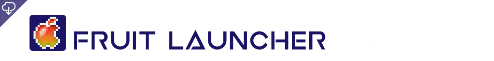
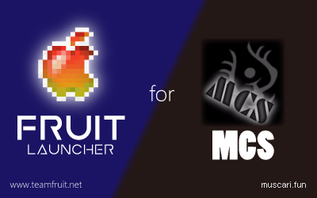
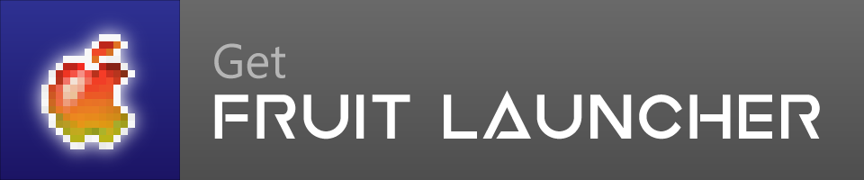
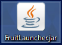
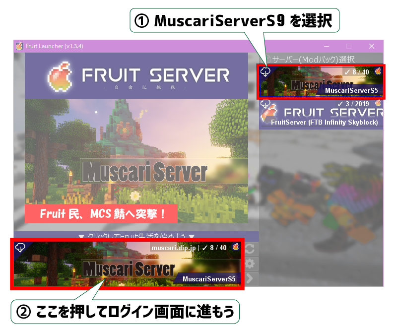
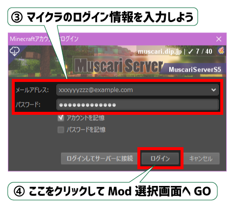
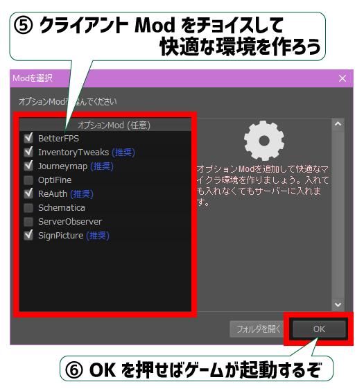
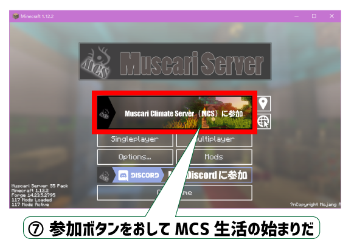

参加方法
- 当サーバーでは参加方法が２つありますが、いずれもDiscord参加推奨です。

- 「FruitLauncer」を用いる場合開く
-
- 
- FruitLauncherを使えばForgeやModパックを手動で導入することなく簡単にサーバーに入れます。
- また、更新があった場合全自動でアップデートされるため、
自身でModパックを更新して頂く必要はございません。
- 
- Javaのインストール
- Muscari Server をプレイするためには Java8 64bit版が必要です。
Java8 64bit
for Windows: Download
for Mac OS/Linuix: Download
FruitLauncerのダウンロード
- ダウンロードはこちら▼
- 
- jar版以外はこちら
FruitLauncerの起動
- ダウンロードしたFruitLauncer.jarをダブルクリックして開いてください。
- 
Modパックを選択
- 
マイクラにログイン
- 
- ここで「ログインしてサーバーに接続」を選択すると次をスキップすることができます。
クライアントModをチョイス
- そのままOKで構いません。
- 
サーバーにログイン
- 
- 自分で環境を作る場合開く
-
-
- ・Minecraft Forgeを導入する。
- ・Discordで配布されているmodpackをダウンロードする。
- ・Minecraft Launcherで新しくプロファイルを作成しバージョンでForgeを選択し保存、そして一度起動して閉じる。
- ・先程ダウンロードしたmodpackを導入する。
- ・マルチプレイからサーバー追加を選択する。
- ・サーバーアドレスにmuscari.funを入力。
- ・追加された当サーバーを選んで接続する。
※更新がある場合、自身でmodpackを更新して頂く必要があります。